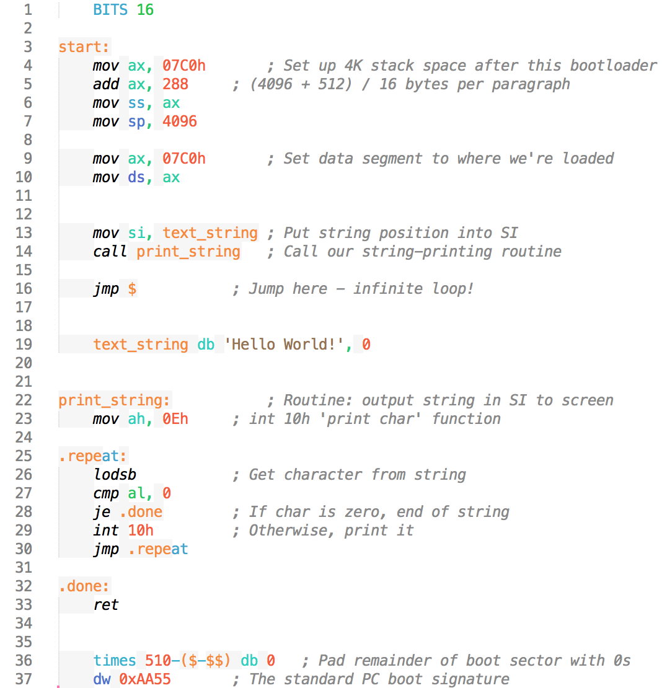
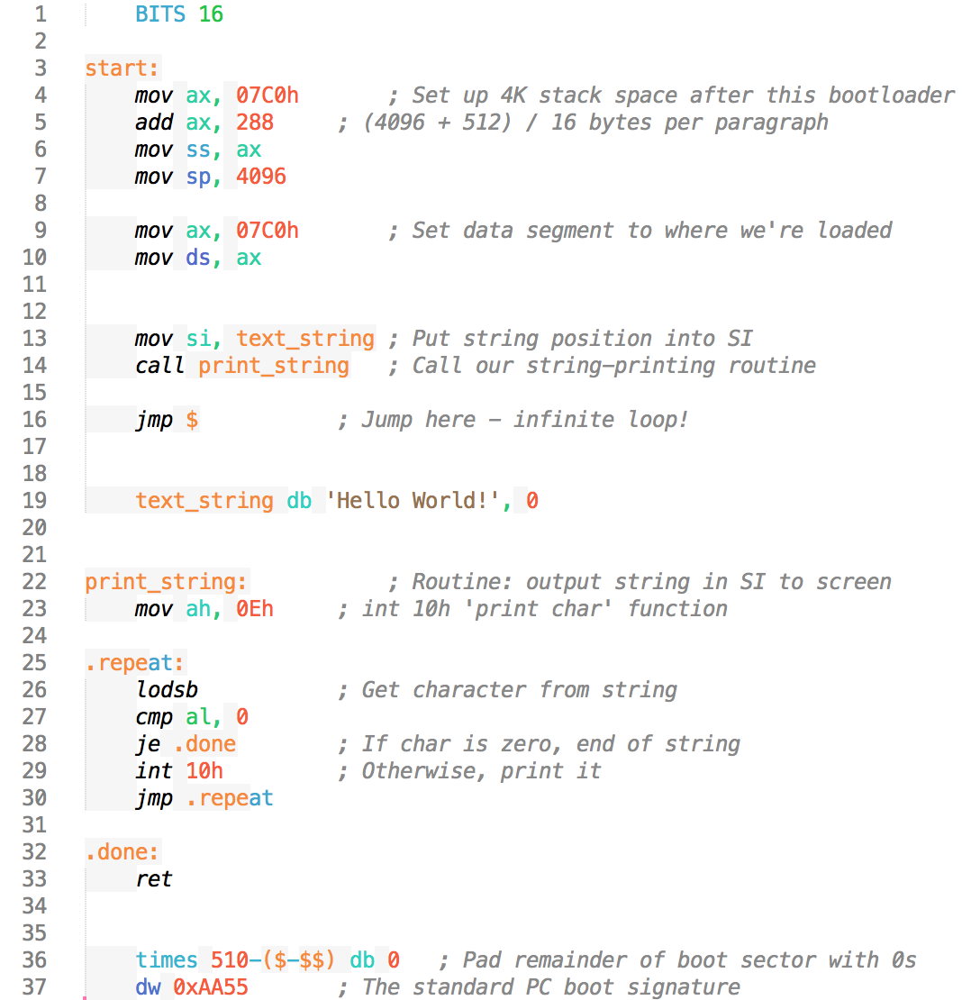

Assembly x86 Beginners (with NASM, Netwide AsSeMbler)
Today you are going to learn how to make programs in Assembly with NASM!
If you are running Windows 7 and Above with 64-bit use this link
If you are running Windows 7 and above but you are running a 32-bit computer then use this link
If you are running Mac OS X then you need to install it with Brew or macPorts
Once you have installed Brew or macPorts type this command into your terminal of choice:
brew:
macPorts:
To install NASM on Debian/Ubuntu with apt-get type this in your console of choice:
Once you have installed NASM on your operationg system of choice type this command into you Command Prompt or your terminal:
If you have installed this correctly you should see something along the lines of this in your terminal
or
Now open your text editor that you like to use, If you do not have a text editor other than TextEdit (Mac), or Notepad (Windows) then I suguest that you get Sublime Text (Mac, Windows, Linux) or Notepad ++ (Windows)
This is the code that we will be learning from, In this code there are the basic things to make a bootable Assembly file. If you want to get into computer engerneering or understand how to reverse engerneer software or an operating system kernel Assmebly is a great start.

Now lets start by going down this code line by line.
In the first line it says
On line 4 it is allocating memory in RAM for the code to run.
On line 5 it is dividing the memory.
On line 9 it is telling the BIOS that the area of memory that we alloacted is ours.
On line 13 it is telling the BIOS that we want to put an ASCII string into SI, which stands for Source Index
On line 14 it is going to our print string function (line 22-24) to print our string, text_string (line 19), to SI.
on line 16
On line 32 to 37 It is telling the BIOS that we have finished with whatever we want to do and we return control back to the BIOS.
Go into the directory that has the .asm file (Assembly x86 Source Code) and type this
If you want to make a bootable file in windows you should follow this guide. But if you are using Mac or any Linux-based Operating System then type this into your terminal.
then type this
And congratulations! You just made your first program in Assembly x86 and made it bootable! Now you're on the road to unlimited migranes (yay~)
Installing Compiler
First off you will need to download the Netwide Assembler off the internet.If you are running Windows 7 and Above with 64-bit use this link
nasm-2.14.03rc2-installer-x64.exeIf you are running Windows 7 and above but you are running a 32-bit computer then use this link
nasm-2.14.03rc2-installer-x86.exeIf you are running Mac OS X then you need to install it with Brew or macPorts
Once you have installed Brew or macPorts type this command into your terminal of choice:
brew:
brew install nasmmacPorts:
sudo port install nasmTo install NASM on Debian/Ubuntu with apt-get type this in your console of choice:
$ sudo apt get install build-essential nasmOnce you have installed NASM on your operationg system of choice type this command into you Command Prompt or your terminal:
$ nasm -vIf you have installed this correctly you should see something along the lines of this in your terminal
$ nasm -v
NASM version 2.14.02 compiled on Feb 27 2019
$
or
C:\nasm -v
NASM Version 2.14.02 compiled on Feb 27 2019
C:\
Coding?
Now that you have your compiler all setup now you can start programming (yay)Now open your text editor that you like to use, If you do not have a text editor other than TextEdit (Mac), or Notepad (Windows) then I suguest that you get Sublime Text (Mac, Windows, Linux) or Notepad ++ (Windows)
This is the code that we will be learning from, In this code there are the basic things to make a bootable Assembly file. If you want to get into computer engerneering or understand how to reverse engerneer software or an operating system kernel Assmebly is a great start.

Now lets start by going down this code line by line.
In the first line it says
BITS 16 because its telling the Assembler that the code is running under 16 Bit.On line 4 it is allocating memory in RAM for the code to run.
On line 5 it is dividing the memory.
On line 9 it is telling the BIOS that the area of memory that we alloacted is ours.
On line 13 it is telling the BIOS that we want to put an ASCII string into SI, which stands for Source Index
On line 14 it is going to our print string function (line 22-24) to print our string, text_string (line 19), to SI.
on line 16
jmp $ means that the code will repeat until the string has finished printingOn line 32 to 37 It is telling the BIOS that we have finished with whatever we want to do and we return control back to the BIOS.
Compiling
To compile with NASM you need to open up your Command Prompt (Windows) or your terminal of choice (Mac, Linux, *nix)Go into the directory that has the .asm file (Assembly x86 Source Code) and type this
nasm -f bin -o data.bin source.asm
If you want to make a bootable file in windows you should follow this guide. But if you are using Mac or any Linux-based Operating System then type this into your terminal.
dd status=noxfer conv=notrunc if=data.bin of=bootable.flp
then type this
qemu-system-i386 -fda bootable.flp
And congratulations! You just made your first program in Assembly x86 and made it bootable! Now you're on the road to unlimited migranes (yay~)